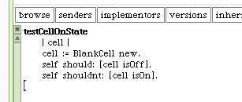
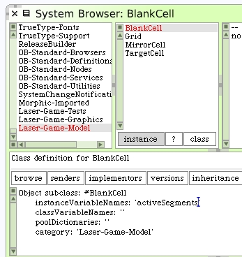
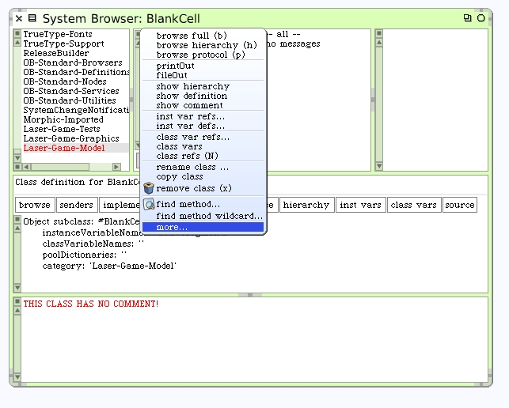
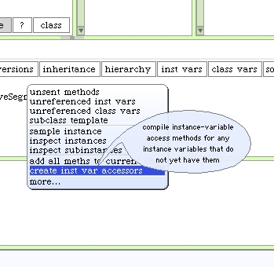
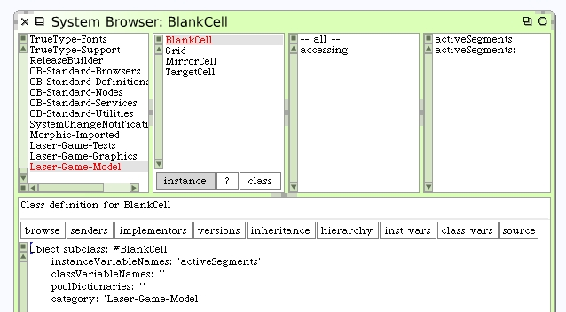

Our first test will be a simple check to see if the cell is "off" or "on" by default. We expect it to be "off" and should test for that.
Now of course we know this test will fail before we even run it because we haven't written the #isOff nor #isOn instance methods yet. For us to know if a cell is on we will have to examine its 4 internal line segments. You may remember the LED clock analogy. If any of the 4 internal segments are lit-up then the cell can be thought of as "on".
However, before we can write the #isOn or #isOff methods we will need to define the line segments on our class. Select the "Laser-Game-Model" system category and the BlankCell class. Add an instance variable "activeSegments".
We will use Squeak's built-in tools to create accessors for this new instance variable. With the class selected, click on the menu button in the classes list pane and choose "more...".
Select "create instance var accessors" from the second popup menu. New instance methods are added for us by Squeak.
 